Choose Flights - Building a better flight selection
American Airlines website
 Desktop
Desktop
Tablet
Mobile Web 1 Product Designer
1 Product Designer
2 Product Owners
6 Developers Research insights
Research insights
Final mockups
Interactive prototypes
Executive presentations Figma
Figma
UserZoom
Tobii Eye Tracking
American Airlines' core revenue engine – the flight booking experience, drives ~$24 billion of airline revenue per year. Our team approached this high-stakes work by combining deep customer insights with strategic business understanding.
The Problem

Users don't know what's included with the fares that they are shopping for.
This leads many users to decide fares by price or past flying experience.
The Solution

Make the flight selection process more transparent by making fare benefits a core part of the flow.
Our main objectives were:
- Increase incremental revenue from fares without impacting current revenue.
- Create one matrix that works across all flight selection products.
- Be able to offer and personalize more fares to customers to increase loyalty.
 Outcomes:
Outcomes:
+$111 million/yrIncrease annual revenue at American Airlines by +$111 million/yr
+1.7%Conversion rate of the legacy design vs the new design.
+Fare Benefit ServiceCreation of a fare benefit service that increases the resiliency and reduces the cost to maintain the service for multiple teams.
Discovery / Define
Understanding our users
We got a lot of feedback from the business stakeholders on the overall direction that they wanted us to take the booking flow, but we also had to keep in mind the users of aa.com today as stakeholders as well. To get their insights into the booking flow today I created a research plan to gather both qualitative and quantitative data on the choose flights page.
- Surveys / interviews
- Those who need to travel and those who choose to travel
- Discovered that customers don't know what they are purchasing a lot of the time so they just choose the cheapest option.
Design Thinking
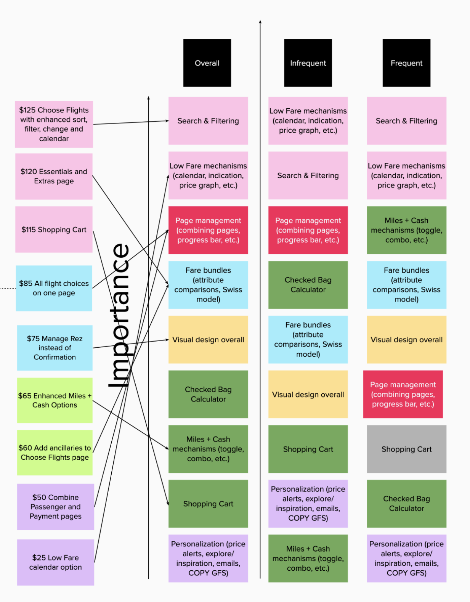
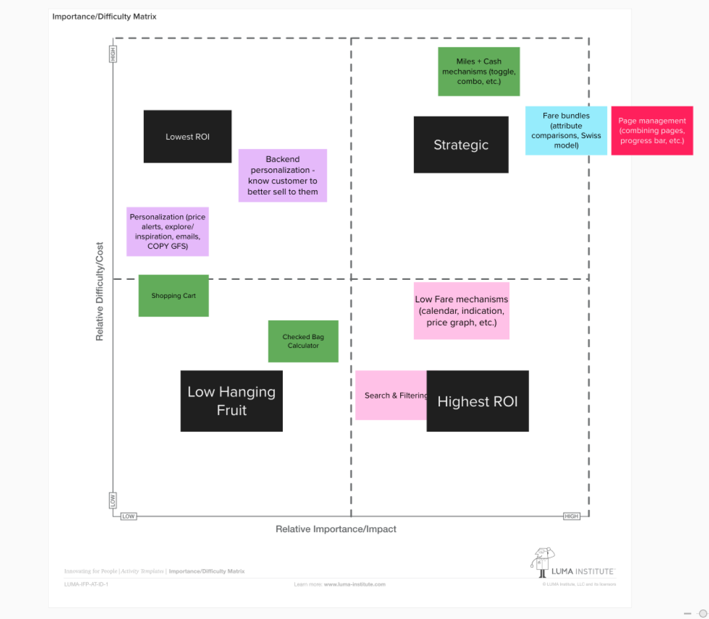
New vision for booking flow

Cabin / fare card sort
In an open card sorting exercise, I explored how users categorize American's 26 different fares. I ran three studies.
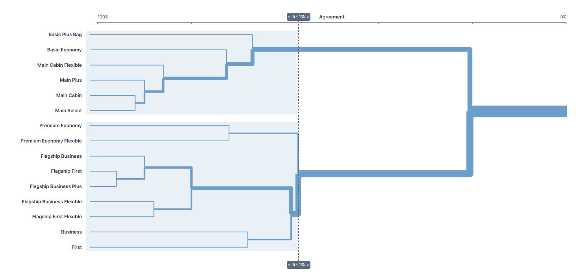
Tools that tell customers the benefits of each fare
One of our discoveries was that all the tools that users have available to learn about American Airlines fares or compare fares against each other don't get many clicks. The number came out ~0.5% of users interacted with one of the tools when they're shopping.
This insight led us to think 3 things about our users:
- Either they don't know how to find where the info is
- They believe that they already have that knowledge to make a decision about their flight
- Or reviewing fare product benefits isn't a natural part of how our users purchase flights.
Comparing the two legacy experiences
On average users start interacting with the Dallas/Fort Worth to Phoenix search 8 seconds faster than the New York to London search.
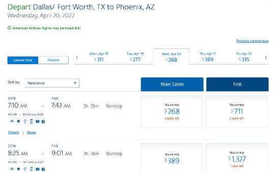
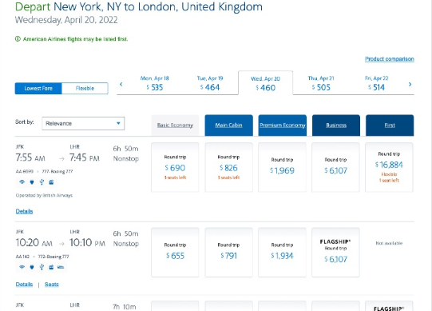
Design / Deliver
Optimizing the flight selection flow
Wireframes that I created to create a more optimal flow of the flight selection process. Removing and adding steps to the user journey where necessary.
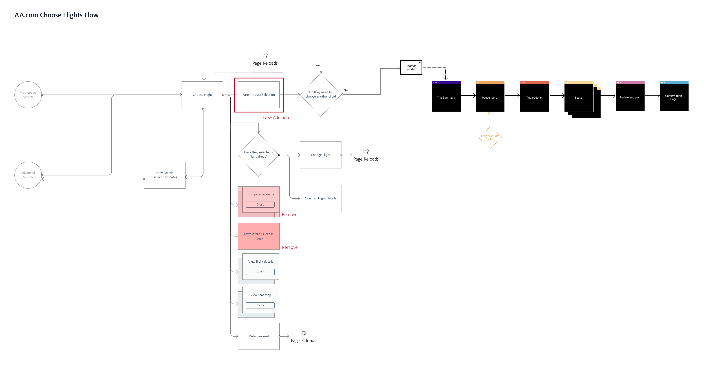
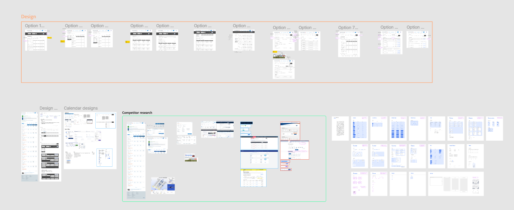
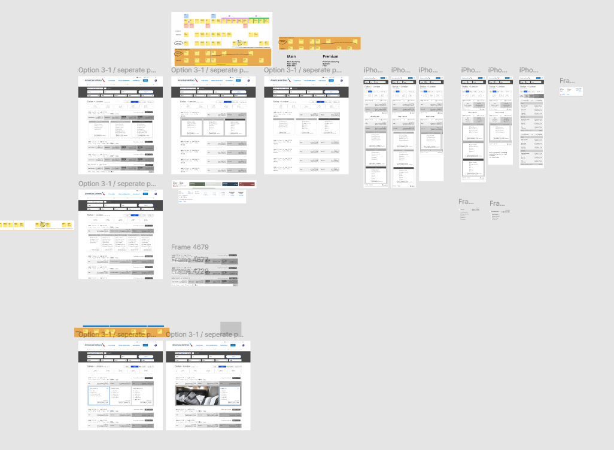
Design & Validation
After wireframing ideas and working through the mid and high-fidelity designs we did both moderated and unmoderated testing of the booking flow with the new search pages.
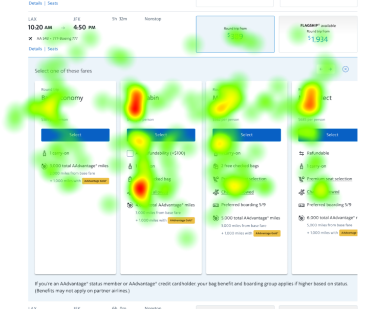
Usability testing
We started by analyzing data gathered during the competitive analysis, which provided insights into how similar features are structured and performed in the market. Using this as a foundation, I facilitated a collaborative session where stakeholders could prioritize potential features by allocating resources, encouraging them to think critically about trade-offs and value.
This activity not only surfaced consensus on must-have functionalities but also sparked discussions about differentiators that could elevate the user experience. By doing this design thinking session we were able to assign a value to some of the features that stakeholders would want to see in a new booking flow.
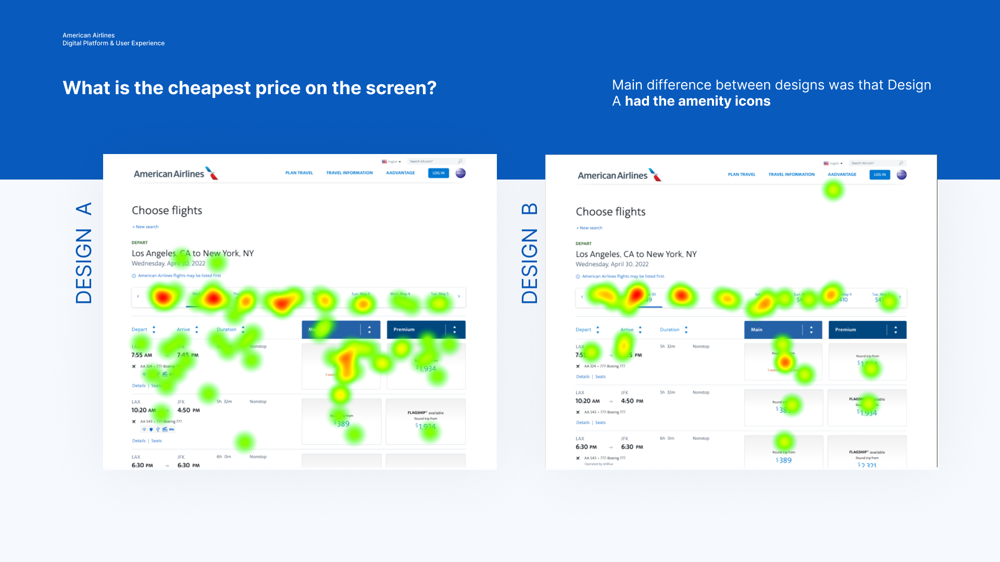
Eyetracking
We also did a few studies of eye-tracking so that we could understand user motivation in a more detailed way.
Over the course of the 2 years of doing multiple iterations and working through different problems that came up we ended up testing with ~2,500 users on our testing platform userzoom, at the airport, and in person.
Final design
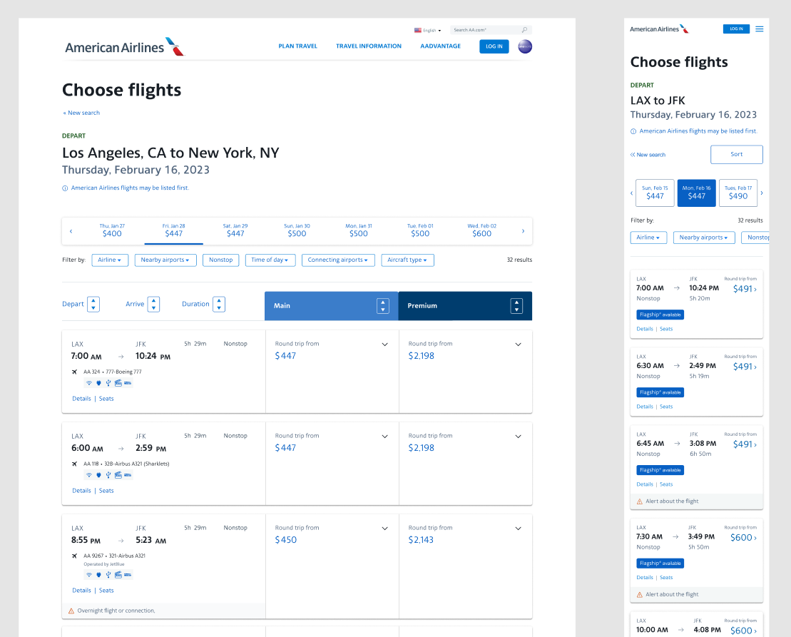
Fare selection
We streamlined fare selection by integrating fare benefits directly into the flight selection flow. In the legacy version the fare benefits weren't being clicked on so that led us to think that people didn't consider those when purchasing their flight, only thinking about price. Putting the fare benefits directly part of the flow is a win win for both users and American Airlines because it allows users to see directly what they're being offered and American Airlines to directly market to their customers.
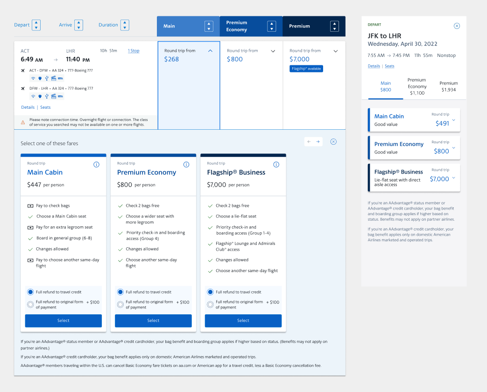
Sorting and filtering
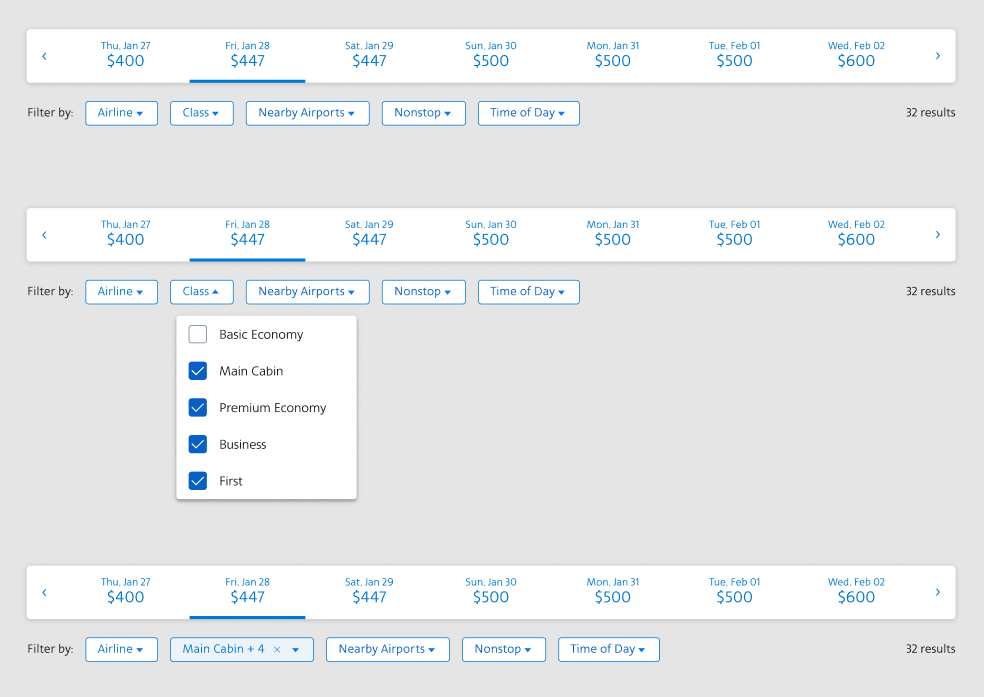
Date Carousel
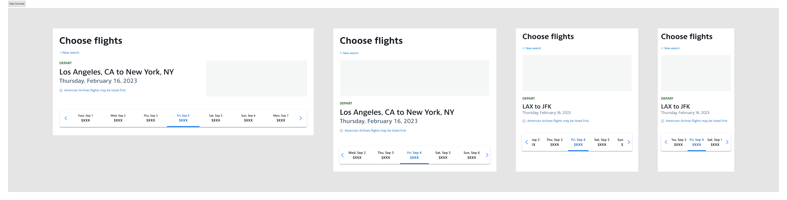
Choose Flights Responsive
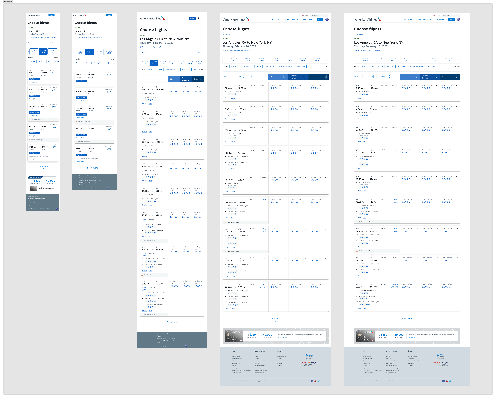
Final Outcome
Increased annual revenue at American Airlines by $111 million.
Raised conversion rate of all ticket sales by 1.7%
Personalized flight selection
Created a fare benefit service
Thanks for reading!
Want to talk about this project, or one like it?
Email meNext case study

American Airlines - Checkout
A new checkout used across 40 flows. Cut the top 20 checkout errors by 10.5% and raised conversion by 0.44%.